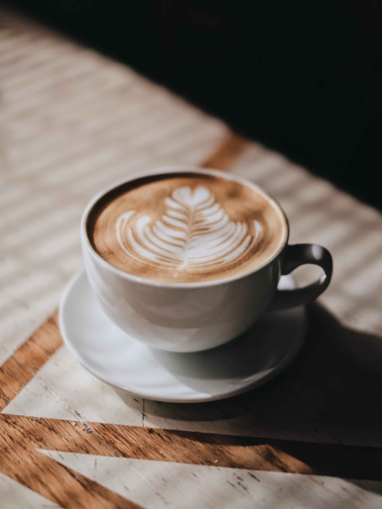
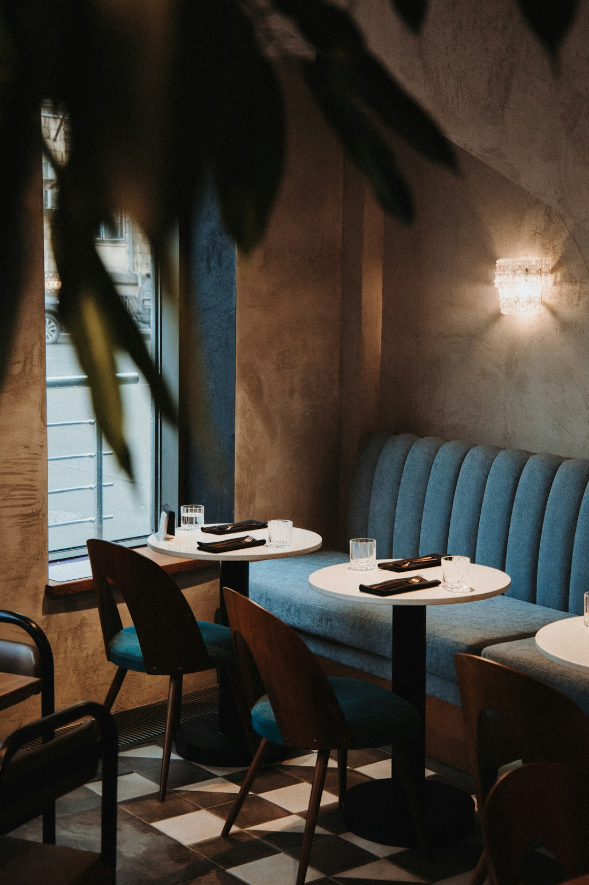
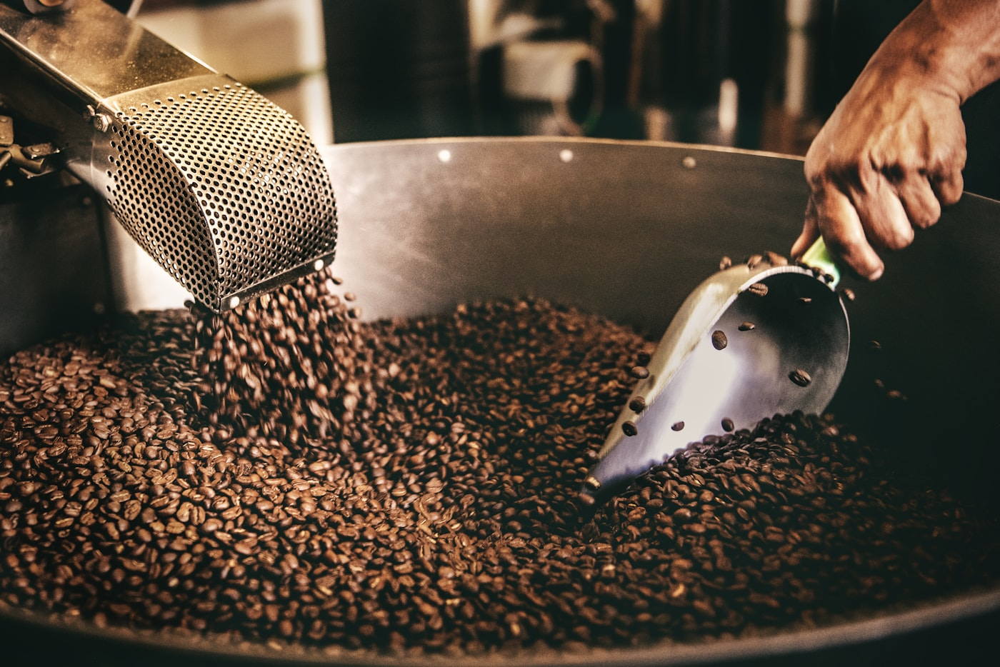
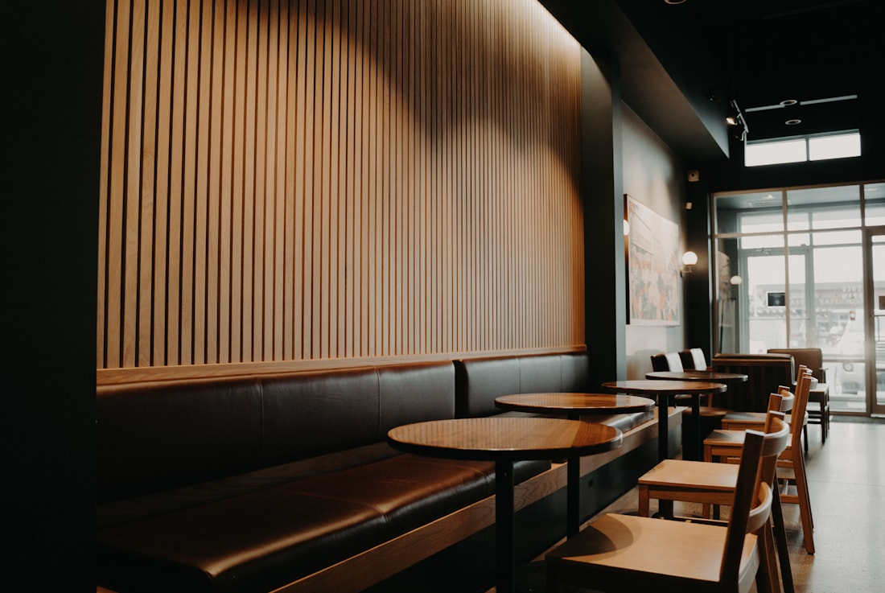
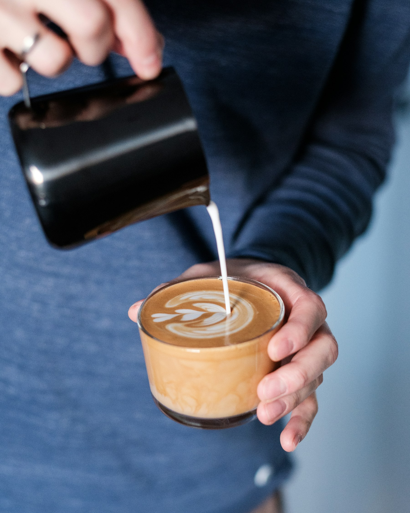
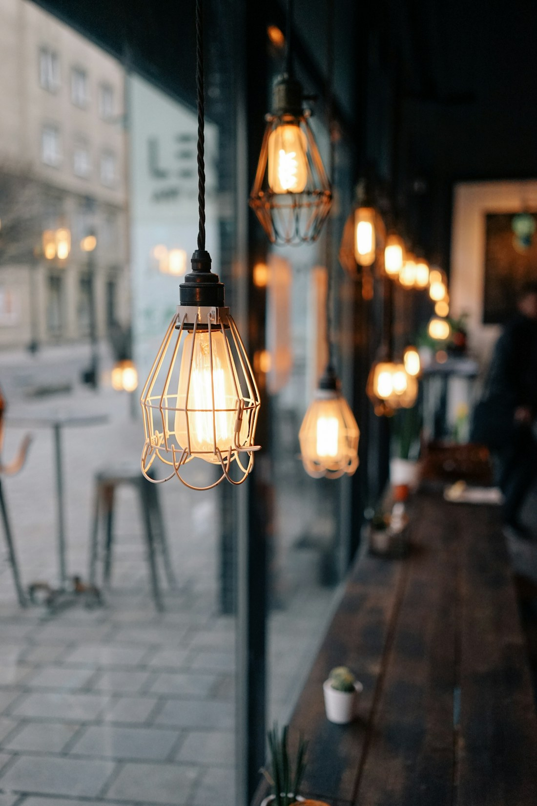
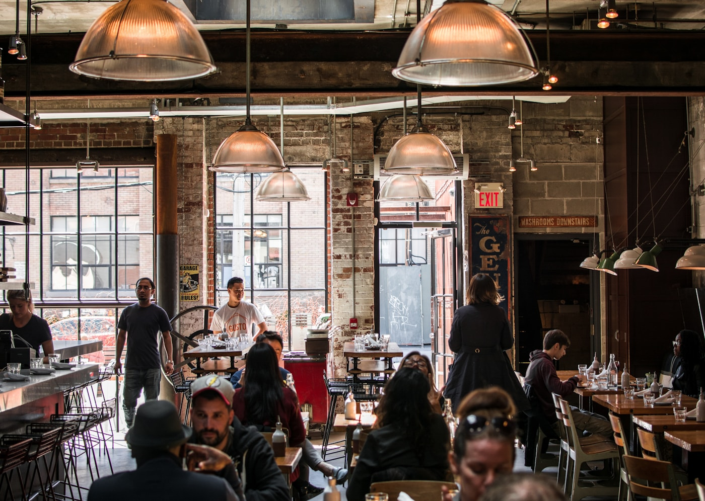

Cafe Latte
カフェラテ
深煎りのブレンドに、きめ細かいミルクを。いちばん多く出ている一杯です。
¥580
栄町通の古いビルの一階、天井の高い空間に、木と真鍮でつくった小さな焙煎所を構えました。窓からの光が、一日のなかで少しずつ角度を変えていきます。
席の間隔は、わざと広めにとりました。パソコンを開いても、本を読んでも、何もしなくてもいい。そういう時間のために、この店はあります。

週に二度、店内の焙煎機で少量ずつ。産地ごとに温度と時間を変え、 その週にいちばんおいしい状態でお出ししています。

カウンターにはその週の豆が並びます。「酸味は控えめで」「食後に飲みたい」——それだけ伝えていただければ、こちらでお選びします。
気に入った豆は100gから量り売りしています。挽き方はお持ちの器具に合わせて調整しますので、お気軽にお申し付けください。



| 住所 | 神戸市中央区栄町通4-1-1 コモレビビル 1F |
|---|---|
| 営業時間 | 8:00 – 19:00 （土日祝 9:00 – 18:00） |
| 定休日 | 火曜日 |
| 席数 | 18席（テラス4席） |
| アクセス | 各線 元町駅より徒歩6分 |
